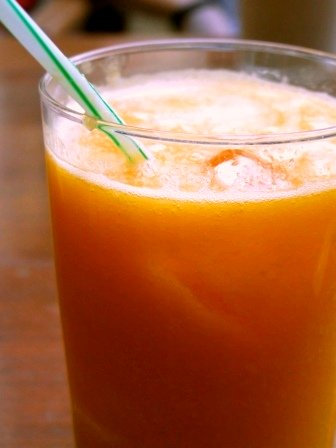

Breakfast Smoothie Recipe

The best breakfast smoothie recipes are the ones that will fill up your nutritional fuel tank and keep you going throughout the morning.
Lately I've been making a green smoothie nearly everyday. I can't even begin to tell you how wonderful it makes me feel. I personally try to keep my ratio vegetables to fruits higher on the veggie side. This ensures I get lots of the good stuff without a sugar spike.
Fruits do contribute nutritionally, but too many of them in a smoothie can rack up the calories and cause a sugar crash later on. If you're attached to sweet smoothies, include 1 or 2 fruits and then you can adjust from there.
So making blended drinks really isn’t rocket science; you basically throw a bunch of tasty ingredients into a blender and the result is one mighty fine tasty concoction that makes you glow.
There is a bit of an art for gauging the right proportions of ingredients in order to get the best consistency and flavor in the end. (And for preventing that ever-frustrating blender scenario where the stuff just sits there, not blending, grrr.)
Here is a simple formula to help you get started, and after a while you’ll be able to create your own breakfast smoothies with ease!
Smoothie Formula
liquid+ creamy + flavorful + veggie or 2 (optional, but not really) + ice (optional) = delicious smoothie
Green Machine Smoothie
Ingredients
- 1 cup unsweetened almond milk
- 1 pear
- 3 large handfuls of spinach
- ½ a cucumber
- ½ a lime
Purple Goddess Smoothie
Ingredients
- 1 cup of unsweetened coconut milk
- 1 medium banana
- 1 cup of frozen blueberries
- 2 handfuls of purple kale leaves (tough stems removed)
Orange You Glad Smoothie
Ingredients
- 1 cup of orange juice
- 2 carrots
- ½ cup unsweetened coconut flakes
- ½ cup yogurt
Directions for All Smoothies
- Start by pouring your liquid into the blender. Add the creamy ingredient (banana, yogurt, avocado, pear, etc.) and give it a whiz.
- Chop any tough veggies/fruits like carrots and apples into roughly 1" pieces. Plop those in there and give it a whirl.
- Then add in your final ingredients, spinach or kale leaves, frozen berries, whatever you have left. Push them down until submerged with a spatula or spoon. You might need to top off with a couple ounces of water to help it along. Then blend it all, baby!
- Once it's smooth and beautiful, enjoy!!
Tips:
- If you want it more liquidy like juice, add more water.
- You can pour it over ice or blend the ice in there.
- Sometimes with frozen berries, ice is unnecessary.
- Try decreasing your sweet ingredients over time - you might be surprised how a little goes a long way!
- Be adventerous: try adding in some cocoa powder, cinnamon, oats, raw ginger, even some jalapeno! Of course, not all at once :)
Creamy Ingredients
Flavorful IngredientsAlmost anything works in a smoothie.
Liquid Ingredients |

|
- coconut milk
- almond milk
- hemp/flax/rice/cow/soy or any other kind of milk
- coconut water
- aloe water
- orange juice
- other fruit juices
Vegetables
This is a perfect way to sneak in extra veggies into your day!
- Spinach
- Carrots
- Kale
- Ginger
- Cucumber
- Celery
- Romaine lettuce
- Arugula
- Beets
There are so many possibilities so get a little creative! Make your own breakfast smoothie recipes just by seeing what you have in the fridge and following the basic formula. If it’s too thick you can always add a little water or extra juice, and if it’s too runny just add extra fruit or ice!
This really is an awesome way to start your day, or a better alternative to caffeine for an afternoon pick-me-up!
You might also enjoy:

Hello! My name is Rebecca. Food is fun and being healthy can be delicious. These two principles guide the plant-based, vegan recipes I make and share on Veritably Veg. Check out my About page to learn more about me. Welcome! From my kitchen to yours, cheers.
Sponsored Ad